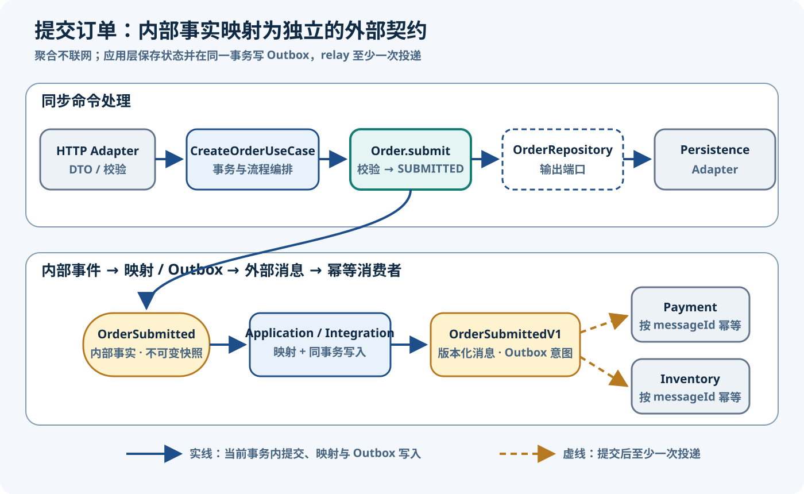

DDD 订单领域 Java 21 完整实践
整理日期与资料检索日期：2026-08-11。前置条件：JDK 21。Spring Boot 只作为外部适配器与组合根的运行环境；本页标为“完整可编译”的领域、应用、端口和测试代码只依赖 JDK，可脱离 Spring 编译运行。
核心结论
- 领域模型拥有不变量和状态转换：
Order决定能否加行、能否提交、币种能否混用；Controller 或 Service 不能替它做最终裁决。 - 应用用例拥有编排和事务边界：
CreateOrderService按“创建 → 加行 → 提交 → 保存 → 交出事件 → 返回”组织一次业务请求，Spring 在外层为它施加事务政策。 - 端口是核心拥有、面向目的的契约：
OrderRepository和DomainEventPublisher只暴露本用例需要的能力，JPA、Outbox 等适配器在外层实现。 - 领域事件记录内部事实：
OrderCreated不直接充当 Kafka/支付/库存契约；跨限界上下文前，由应用/集成适配器翻译成版本化消息并可靠持久化、异步发布。 - Spring Boot 负责组装，不定义领域：Web、事务、JPA、序列化和消息组件可以更换，领域类型仍是普通 Java 21。
Eric Evans 的 DDD Reference把 Aggregate、Repository、Service 与 Layered Architecture 放进同一套模型语言；Microsoft 的领域模型设计指南也强调实体方法应守护不变量，而不是把规则散落在应用层。本文把这些原则翻译为 Java 工程边界，不把任何框架 API 当成 DDD 定义。
目录与依赖
order/
domain/ Order, OrderId, ProductId, OrderLine, Money, OrderCreated
application/ CreateOrderCommand, CreateOrderUseCase, CreateOrderService
port/out/ OrderRepository, DomainEventPublisher
adapter/in/web/ HttpCreateOrderAdapter
adapter/out/persistence/ JpaOrderRepositoryAdapter + mapping
adapter/out/event/ OutboxDomainEventPublisher
bootstrap/ Spring composition先按 order 限界上下文聚合变化，再在上下文内分责任。domain只拥有业务状态和规则；application拥有用例流程和稳定输入/输出；port/out是核心为了完成用例而定义的能力；三类 adapter翻译 HTTP、持久化和消息协议；bootstrap选择实现并施加事务、时钟等政策。这是一个维护性示例，不是 DDD 强制目录。
| 源代码区域 | 允许依赖 | 不应认识 | 所有权 |
|---|---|---|---|
domain | JDK 与同域类型 | Spring、HTTP、JPA、Broker | 不变量、状态转换、内部事实 |
application / port | Domain、JDK | 具体数据库、Controller、消息 SDK | 用例与核心所需能力 |
adapter / bootstrap | 核心契约、框架与驱动 | 不得反向迫使核心 import 框架 | 协议映射、持久化、可靠投递、组装 |
Microsoft 的基础设施持久化层指南把仓储实现放在基础设施，避免应用直接依赖数据库实现；接口究竟放 Domain 还是 Application 要由语义所有者决定。本例的两个端口服务于创建用例，因此放在核心的 port/out。
订单聚合
本例事件语义：OrderCreated表示“Order 上下文已建立一个具有合法标识和时间的 Draft 聚合”这一内部审计事实，记录点就是 Order.create。它不表示“已支付”“已预占库存”或“已对外发布”；命令边界先拒绝空行列表，因此正常创建用例不会保存空草稿。若后续行为失败，事务回滚且事件不会进入 Outbox。
Vaughn Vernon 的 Effective Aggregate Design建议从真实一致性规则出发设计小聚合；Fowler 的 Value Object说明值对象按属性相等。Java record自动生成 final 组件、访问器与值相等方法，但仍需构造校验；详见 Oracle Java 21 Record 文档。sealed只限制事件层次扩展范围，不创造业务语义；其语言规则见 Oracle Sealed Classes 文档。
领域基础类型
以下六个文件均为完整可编译 Java 21，文件边界由注释标明。Money把金额规范化到币种的小数位，拒绝需要隐式舍入的输入；相加要求同币种，乘法要求正数量。
// src/example/order/domain/OrderId.java
package example.order.domain;
import java.util.Objects;
import java.util.UUID;
public record OrderId(UUID value) {
public OrderId {
Objects.requireNonNull(value, "value");
}
public static OrderId random() {
return new OrderId(UUID.randomUUID());
}
}
// src/example/order/domain/ProductId.java
package example.order.domain;
public record ProductId(String value) {
public ProductId {
if (value == null || value.isBlank()) {
throw new IllegalArgumentException("productId must not be blank");
}
}
}
// src/example/order/domain/Money.java
package example.order.domain;
import java.math.BigDecimal;
import java.math.RoundingMode;
import java.util.Currency;
import java.util.Objects;
public record Money(BigDecimal amount, Currency currency) {
public Money {
Objects.requireNonNull(amount, "amount");
Objects.requireNonNull(currency, "currency");
if (amount.signum() < 0) {
throw new IllegalArgumentException("money must not be negative");
}
int scale = currency.getDefaultFractionDigits();
if (scale < 0) {
throw new IllegalArgumentException("currency must define a fraction scale");
}
amount = amount.setScale(scale, RoundingMode.UNNECESSARY);
}
public Money add(Money other) {
Objects.requireNonNull(other, "other");
requireSameCurrency(other);
return new Money(amount.add(other.amount), currency);
}
public Money multiply(int quantity) {
if (quantity <= 0) {
throw new IllegalArgumentException("quantity must be positive");
}
return new Money(amount.multiply(BigDecimal.valueOf(quantity)), currency);
}
private void requireSameCurrency(Money other) {
if (!currency.equals(other.currency)) {
throw new IllegalArgumentException("currencies must match");
}
}
}
// src/example/order/domain/OrderStatus.java
package example.order.domain;
public enum OrderStatus {
DRAFT,
SUBMITTED
}
// src/example/order/domain/DomainEvent.java
package example.order.domain;
public sealed interface DomainEvent permits OrderCreated {
}
// src/example/order/domain/OrderCreated.java
package example.order.domain;
import java.time.Instant;
import java.util.Objects;
public record OrderCreated(OrderId orderId, Instant occurredAt) implements DomainEvent {
public OrderCreated {
Objects.requireNonNull(orderId, "orderId");
Objects.requireNonNull(occurredAt, "occurredAt");
}
}Order 聚合完整代码
OrderLine是带身份的内部实体，但被定义为 private static final；外部只拿到不可变 record 快照和不可变列表。修改入口只有聚合行为。rehydrate是持久化适配器专用的显式还原路径：重建并复核状态，但不会把历史 OrderCreated再次加入待发布列表。
package example.order.domain;
import java.time.Instant;
import java.util.ArrayList;
import java.util.List;
import java.util.Objects;
import java.util.UUID;
public final class Order {
private final OrderId id;
private final List<OrderLine> lines = new ArrayList<>();
private final List<DomainEvent> domainEvents = new ArrayList<>();
private OrderStatus status;
public record OrderLineSnapshot(
UUID id,
ProductId productId,
int quantity,
Money unitPrice,
Money subtotal) {
public OrderLineSnapshot {
Objects.requireNonNull(id, "id");
Objects.requireNonNull(productId, "productId");
Objects.requireNonNull(unitPrice, "unitPrice");
Objects.requireNonNull(subtotal, "subtotal");
if (quantity <= 0) {
throw new IllegalArgumentException("quantity must be positive");
}
if (!unitPrice.multiply(quantity).equals(subtotal)) {
throw new IllegalArgumentException("subtotal must equal unitPrice * quantity");
}
}
}
private Order(OrderId id, OrderStatus status) {
this.id = Objects.requireNonNull(id, "id");
this.status = Objects.requireNonNull(status, "status");
}
public static Order create(OrderId id, Instant occurredAt) {
var order = new Order(id, OrderStatus.DRAFT);
order.domainEvents.add(new OrderCreated(id, occurredAt));
return order;
}
public static Order rehydrate(
OrderId id,
OrderStatus status,
List<OrderLineSnapshot> snapshots) {
Objects.requireNonNull(snapshots, "snapshots");
var order = new Order(id, status);
for (OrderLineSnapshot snapshot : List.copyOf(snapshots)) {
order.addRestoredLine(snapshot);
}
if (status == OrderStatus.SUBMITTED && order.lines.isEmpty()) {
throw new IllegalArgumentException("submitted order must contain a line");
}
return order;
}
public void addLine(ProductId productId, int quantity, Money unitPrice) {
requireDraft();
Objects.requireNonNull(productId, "productId");
Objects.requireNonNull(unitPrice, "unitPrice");
requireCurrency(unitPrice);
lines.add(new OrderLine(UUID.randomUUID(), productId, quantity, unitPrice));
}
public void submit() {
requireDraft();
if (lines.isEmpty()) {
throw new IllegalStateException("empty order cannot be submitted");
}
total();
status = OrderStatus.SUBMITTED;
}
public OrderId id() {
return id;
}
public OrderStatus status() {
return status;
}
public List<OrderLineSnapshot> lineSnapshots() {
return lines.stream().map(OrderLine::snapshot).toList();
}
public Money total() {
if (lines.isEmpty()) {
throw new IllegalStateException("empty order has no total");
}
Money result = lines.getFirst().subtotal();
for (int index = 1; index < lines.size(); index++) {
result = result.add(lines.get(index).subtotal());
}
return result;
}
public List<DomainEvent> pullEvents() {
List<DomainEvent> collected = List.copyOf(domainEvents);
domainEvents.clear();
return collected;
}
private void addRestoredLine(OrderLineSnapshot snapshot) {
Objects.requireNonNull(snapshot, "snapshot");
requireCurrency(snapshot.unitPrice());
lines.add(new OrderLine(
snapshot.id(), snapshot.productId(), snapshot.quantity(), snapshot.unitPrice()));
}
private void requireCurrency(Money candidate) {
if (!lines.isEmpty()
&& !lines.getFirst().unitPrice.currency().equals(candidate.currency())) {
throw new IllegalArgumentException("all order lines must use one currency");
}
}
private void requireDraft() {
if (status != OrderStatus.DRAFT) {
throw new IllegalStateException("only draft orders can change or be submitted");
}
}
private static final class OrderLine {
private final UUID id;
private final ProductId productId;
private final int quantity;
private final Money unitPrice;
private OrderLine(UUID id, ProductId productId, int quantity, Money unitPrice) {
this.id = Objects.requireNonNull(id, "id");
this.productId = Objects.requireNonNull(productId, "productId");
if (quantity <= 0) {
throw new IllegalArgumentException("quantity must be positive");
}
this.quantity = quantity;
this.unitPrice = Objects.requireNonNull(unitPrice, "unitPrice");
}
private Money subtotal() {
return unitPrice.multiply(quantity);
}
private OrderLineSnapshot snapshot() {
return new OrderLineSnapshot(id, productId, quantity, unitPrice, subtotal());
}
}
}不变量审查：负金额和非正数量无法构造；同一订单只能使用一种币种；空订单不能提交；提交后不能加行或再次提交；总额只能由内部行计算；没有 public setter，也没有可逃逸的 OrderLine引用。聚合不调用 Repository、Spring 或网络客户端。Microsoft 的聚合校验指南明确把跨状态变化的不变量守护归于实体，尤其是聚合根。
创建订单用例
Command 是输入边界数据，不是 HTTP DTO，也不是 JPA Entity。它复制行列表并拒绝空列表；每个行请求再次保证商品、金额和数量有效。示例没有加入未被使用的 customer/request 字段；生产系统若要求幂等，应把 requestId加入命令，并在应用/数据库边界用唯一约束持久化请求与稳定结果，而不是只在 Controller 做内存去重。
// src/example/order/application/CreateOrderCommand.java
package example.order.application;
import example.order.domain.Money;
import example.order.domain.ProductId;
import java.util.List;
import java.util.Objects;
public record CreateOrderCommand(List<Line> lines) {
public CreateOrderCommand {
Objects.requireNonNull(lines, "lines");
lines = List.copyOf(lines);
if (lines.isEmpty()) {
throw new IllegalArgumentException("order must contain at least one line");
}
}
public record Line(ProductId productId, int quantity, Money unitPrice) {
public Line {
Objects.requireNonNull(productId, "productId");
Objects.requireNonNull(unitPrice, "unitPrice");
if (quantity <= 0) {
throw new IllegalArgumentException("quantity must be positive");
}
}
}
}
// src/example/order/application/CreateOrderResult.java
package example.order.application;
import example.order.domain.Money;
import example.order.domain.OrderId;
import example.order.domain.OrderStatus;
import java.util.Objects;
public record CreateOrderResult(OrderId orderId, OrderStatus status, Money total) {
public CreateOrderResult {
Objects.requireNonNull(orderId, "orderId");
Objects.requireNonNull(status, "status");
Objects.requireNonNull(total, "total");
}
}
// src/example/order/application/CreateOrderUseCase.java
package example.order.application;
public interface CreateOrderUseCase {
CreateOrderResult create(CreateOrderCommand command);
}
// src/example/order/application/CreateOrderService.java
package example.order.application;
import example.order.domain.Order;
import example.order.domain.OrderId;
import example.order.port.out.DomainEventPublisher;
import example.order.port.out.OrderRepository;
import java.time.Clock;
import java.util.Objects;
import java.util.function.Supplier;
public final class CreateOrderService implements CreateOrderUseCase {
private final OrderRepository orders;
private final DomainEventPublisher events;
private final Clock clock;
private final Supplier<OrderId> orderIds;
public CreateOrderService(
OrderRepository orders,
DomainEventPublisher events,
Clock clock,
Supplier<OrderId> orderIds) {
this.orders = Objects.requireNonNull(orders, "orders");
this.events = Objects.requireNonNull(events, "events");
this.clock = Objects.requireNonNull(clock, "clock");
this.orderIds = Objects.requireNonNull(orderIds, "orderIds");
}
@Override
public CreateOrderResult create(CreateOrderCommand command) {
Objects.requireNonNull(command, "command");
OrderId orderId = Objects.requireNonNull(orderIds.get(), "generated orderId");
Order order = Order.create(orderId, clock.instant());
for (CreateOrderCommand.Line line : command.lines()) {
order.addLine(line.productId(), line.quantity(), line.unitPrice());
}
order.submit();
orders.save(order);
events.publish(order.pullEvents());
return new CreateOrderResult(order.id(), order.status(), order.total());
}
}- Command 构造时完成边界形状校验；Service 再拒绝 null 并获得可替换的 ID 与时间。
- 聚合建立 Draft、逐行执行规则、提交；任何不变量失败都停止流程。
- Repository 保存整个聚合；随后应用层拉取内部事件并交给发布端口。
- 生产 Outbox 实现中的“publish”是在同一数据库事务中写 Outbox，不是同步调用消息 Broker；事务提交后由 relay 异步发送。
“保存后再交事件”只有在 Repository 写订单与 Publisher 写 Outbox 共享同一事务时才可靠。若这里换成内存回调或直接发 Kafka，就会出现数据库已提交、消息未发送（或反之）的 dual-write 缝隙。事务属于用例政策；框架注解放在外层代理/组合代码，不进入 Domain。

OrderCreated首先是内部领域事件，Event Publisher 在本例表示事务性 Outbox 写入边界，而不是聚合直接发送网络消息。图的文字等价说明：HTTP Adapter 把请求翻译成 Command；Use Case 调用 Order 规则并经 Repository 保存；Order 只记录内部 OrderCreated。应用/集成适配器再把它映射为独立的 OrderCreatedV1，与订单状态同事务落入 Outbox。事务提交后，独立 relay 才向支付、库存等边界外消费者发送。图中虚线箭头是两阶段语义的压缩表达，绝不表示 Aggregate 调用 Broker。
端口与适配器
核心拥有的输出端口
// src/example/order/port/out/OrderRepository.java
package example.order.port.out;
import example.order.domain.Order;
import example.order.domain.OrderId;
import java.util.Optional;
public interface OrderRepository {
void save(Order order);
Optional<Order> findById(OrderId id);
}
// src/example/order/port/out/DomainEventPublisher.java
package example.order.port.out;
import example.order.domain.DomainEvent;
import java.util.List;
public interface DomainEventPublisher {
void publish(List<? extends DomainEvent> events);
}OrderRepository是聚合导向的最小集合语义，不暴露 EntityManager、分页 CRUD 或订单行 DAO。DomainEventPublisher接收不可变事件列表；它的生产实现必须明确语义。本文的实现约定是“把事件转换并写入事务性 Outbox”，名字中的 Publisher 不承诺已到达远程 Broker。
HTTP 输入适配器
聚焦外层摘录，非框架无关 bundle：需要 Spring Web、Jackson 与 Jakarta Validation 依赖；省略统一异常映射。Spring 类型只出现在 Adapter。
@RestController
@RequestMapping("/orders")
final class HttpCreateOrderAdapter {
private final CreateOrderUseCase useCase;
HttpCreateOrderAdapter(CreateOrderUseCase useCase) {
this.useCase = useCase;
}
@PostMapping
ResponseEntity<CreateOrderResponse> create(
@Valid @RequestBody CreateOrderRequest request) {
var command = new CreateOrderCommand(request.lines().stream()
.map(line -> new CreateOrderCommand.Line(
new ProductId(line.productId()),
line.quantity(),
new Money(line.unitPrice(), Currency.getInstance(line.currency()))))
.toList());
var result = useCase.create(command);
return ResponseEntity.status(HttpStatus.CREATED)
.body(new CreateOrderResponse(
result.orderId().value(), result.status().name(), result.total().amount()));
}
}
record CreateOrderRequest(@NotEmpty List<@Valid LineRequest> lines) {}
record LineRequest(@NotBlank String productId, @Positive int quantity,
@NotNull BigDecimal unitPrice, @NotBlank String currency) {}
record CreateOrderResponse(UUID orderId, String status, BigDecimal total) {}JPA 持久化适配器
聚焦伪代码，非框架无关 bundle：需要 Spring Data JPA/Jakarta Persistence；映射细节（级联、乐观锁、删除差异）需按表结构完成。关键点是 JPA Row 与 Domain Order分离，Adapter 映射并调用 rehydrate，不会回放历史事件。Spring Data 的 save 持久化语义文档描述的是 persist/merge机制；这不自动证明一个 JpaRepository就是业务语义上的 DDD Repository。
@Entity
@Table(name = "orders")
class OrderRow { // persistence model, not domain Order
@Id UUID id;
String status;
@Version long version;
@OneToMany(cascade = ALL, orphanRemoval = true) List<OrderLineRow> lines;
}
interface SpringDataOrderRows extends JpaRepository<OrderRow, UUID> {}
@Repository
final class JpaOrderRepositoryAdapter implements OrderRepository {
private final SpringDataOrderRows rows;
private final OrderPersistenceMapper mapper;
public void save(Order order) {
rows.save(mapper.toRow(order));
}
public Optional<Order> findById(OrderId id) {
return rows.findById(id.value()).map(row -> Order.rehydrate(
new OrderId(row.id),
OrderStatus.valueOf(row.status),
mapper.toSnapshots(row.lines)));
}
}Outbox 事件适配器
聚焦外层摘录，非框架无关 bundle：内部事件先映射为不同生命周期的集成消息。OrderCreatedV1拥有消息 ID、稳定字段和显式版本；Outbox Row 与订单在同一数据库事务写入，relay 独立读取并发送。
record OrderCreatedV1(
UUID messageId,
UUID orderId,
Instant occurredAt,
int schemaVersion) {}
@Repository
final class OutboxDomainEventPublisher implements DomainEventPublisher {
private final OutboxRowRepository outboxRows;
private final JsonMapper json;
@Override
public void publish(List<? extends DomainEvent> events) {
events.stream()
.map(this::toIntegrationMessage)
.map(message -> OutboxRow.pending(
message.messageId(), "order.created.v1", json.write(message)))
.forEach(outboxRows::save); // only a DB write in the current transaction
}
private OrderCreatedV1 toIntegrationMessage(DomainEvent event) {
if (event instanceof OrderCreated created) {
return new OrderCreatedV1(
UUID.randomUUID(), created.orderId().value(), created.occurredAt(), 1);
}
throw new IllegalArgumentException("unsupported event: " + event.getClass());
}
}领域事件
Fowler 的 Domain Event把事件描述为领域中值得记忆的事实，并强调源数据不可变；Microsoft 的 Domain Event 设计指南区分上下文内部领域事件与跨微服务 Integration Event，并要求外部事件只在状态成功持久化后传播。
- 记录：聚合行为发生时创建过去式、不可变的内部事实，不做 I/O。
- 收集：聚合暂存事件；应用层在状态转换成功后
pullEvents()。 - 可靠落盘：订单行与 Outbox 消息在同一事务提交，避免数据库/Broker 双写缺口。
- 异步投递：relay 重试发送并记录投递状态；消费者按
messageId幂等，不能假设 exactly-once。 - 演进：消息用显式版本和兼容字段；若要求同一聚合有序，使用聚合键/序列并在消费者检测乱序。
Azure Architecture Center 的 Transactional Outbox 指南说明：业务对象和事件先在同一数据事务保存，再由独立 worker 发布。Outbox缩小了丢消息窗口，但重试会带来重复，因此消费者幂等、告警、死信和重放仍是生产责任。
| 对象 | 主要范围 | 契约所有者/生命周期 | 可靠性含义 | 本例 |
|---|---|---|---|---|
| Domain Event | Order 上下文内部 | 领域模型；随模型重构演进 | 聚合内先收集，不直接联网 | OrderCreated |
| Integration Message | 限界上下文之间 | 发布者与消费者共同依赖；长期兼容、版本化 | Outbox 持久化、异步投递、消费幂等 | OrderCreatedV1 |
| Spring Application Event | 通常同进程、框架分发 | 应用/框架内部 | 可绑定事务阶段，但默认不是持久消息 | ApplicationEventPublisher |
Spring 的 @TransactionalEventListener官方文档支持把监听器绑定到提交阶段，但“提交后执行”并不等于“宕机后仍可重放”。需要跨进程可靠投递时仍使用 Outbox 或等价持久机制。
测试
下面是完整可运行 Java 21验证入口。它使用真实内存 Fake，不使用只验证调用次数的 Mock：Repository 实际保存聚合并可按 ID 读取，Publisher 实际收集不可变事件副本。八项检查覆盖成功流、边界输入、聚合状态、币种、ID、一致性封装和无事件重放。
package example.order.testing;
import example.order.application.CreateOrderCommand;
import example.order.application.CreateOrderResult;
import example.order.application.CreateOrderService;
import example.order.domain.DomainEvent;
import example.order.domain.Money;
import example.order.domain.Order;
import example.order.domain.OrderCreated;
import example.order.domain.OrderId;
import example.order.domain.OrderStatus;
import example.order.domain.ProductId;
import example.order.port.out.DomainEventPublisher;
import example.order.port.out.OrderRepository;
import java.lang.reflect.Modifier;
import java.math.BigDecimal;
import java.time.Clock;
import java.time.Instant;
import java.time.ZoneOffset;
import java.util.ArrayList;
import java.util.Currency;
import java.util.List;
import java.util.Optional;
import java.util.UUID;
public final class OrderWalkthrough {
private static final Currency CNY = Currency.getInstance("CNY");
private static final Currency USD = Currency.getInstance("USD");
private static final Instant NOW = Instant.parse("2026-08-11T02:00:00Z");
private static int checks;
public static void main(String[] args) {
validOrderSucceedsAndHandsOffEvent();
emptyOrderIsRejected();
invalidQuantityAndMoneyAreRejected();
submittedOrderCannotChangeOrResubmit();
mixedCurrencyIsRejected();
repositorySeesSameAggregateId();
internalOrderLineCannotEscape();
rehydrationDoesNotReplayHistoricalEvents();
System.out.println("PASS: " + checks + " Java 21 DDD checks");
}
private static void validOrderSucceedsAndHandsOffEvent() {
var fixture = new Fixture();
CreateOrderResult result = fixture.service.create(validCommand());
assert result.status() == OrderStatus.SUBMITTED;
assert result.total().equals(money("25.00", CNY));
assert fixture.repository.saveCount == 1;
assert fixture.publisher.events.size() == 1;
DomainEvent event = fixture.publisher.events.getFirst();
assert event instanceof OrderCreated;
OrderCreated created = (OrderCreated) event;
assert created.orderId().equals(result.orderId());
assert created.occurredAt().equals(NOW);
pass();
}
private static void emptyOrderIsRejected() {
expectThrows(IllegalArgumentException.class,
() -> new CreateOrderCommand(List.of()));
Order empty = Order.create(
new OrderId(UUID.fromString("00000000-0000-0000-0000-000000000002")), NOW);
expectThrows(IllegalStateException.class, empty::submit);
pass();
}
private static void invalidQuantityAndMoneyAreRejected() {
expectThrows(IllegalArgumentException.class,
() -> new CreateOrderCommand.Line(
new ProductId("sku-1"), 0, money("1.00", CNY)));
expectThrows(IllegalArgumentException.class,
() -> new CreateOrderCommand.Line(
new ProductId("sku-1"), -1, money("1.00", CNY)));
expectThrows(IllegalArgumentException.class,
() -> money("-0.01", CNY));
pass();
}
private static void submittedOrderCannotChangeOrResubmit() {
Order order = submittedOrder();
expectThrows(IllegalStateException.class,
() -> order.addLine(new ProductId("sku-2"), 1, money("2.00", CNY)));
expectThrows(IllegalStateException.class, order::submit);
pass();
}
private static void mixedCurrencyIsRejected() {
Order order = Order.create(new OrderId(UUID.randomUUID()), NOW);
order.addLine(new ProductId("sku-cny"), 1, money("3.00", CNY));
expectThrows(IllegalArgumentException.class,
() -> order.addLine(new ProductId("sku-usd"), 1, money("4.00", USD)));
assert order.total().equals(money("3.00", CNY));
pass();
}
private static void repositorySeesSameAggregateId() {
var fixture = new Fixture();
CreateOrderResult result = fixture.service.create(validCommand());
assert fixture.repository.saved.id().equals(result.orderId());
assert fixture.repository.findById(result.orderId()).orElseThrow()
== fixture.repository.saved;
pass();
}
private static void internalOrderLineCannotEscape() {
Order order = submittedOrder();
List<Order.OrderLineSnapshot> snapshots = order.lineSnapshots();
expectThrows(UnsupportedOperationException.class,
() -> snapshots.add(snapshots.getFirst()));
assert snapshots.getFirst().getClass().isRecord();
List<Class<?>> internalLines = List.of(Order.class.getDeclaredClasses()).stream()
.filter(type -> type.getSimpleName().equals("OrderLine"))
.toList();
assert internalLines.size() == 1;
assert Modifier.isPrivate(internalLines.getFirst().getModifiers());
assert List.of(Order.class.getMethods()).stream()
.noneMatch(method -> method.getReturnType().getSimpleName().equals("OrderLine"));
pass();
}
private static void rehydrationDoesNotReplayHistoricalEvents() {
Order original = submittedOrder();
original.pullEvents();
Order restored = Order.rehydrate(
original.id(), original.status(), original.lineSnapshots());
assert restored.pullEvents().isEmpty();
assert restored.total().equals(original.total());
pass();
}
private static CreateOrderCommand validCommand() {
return new CreateOrderCommand(List.of(
new CreateOrderCommand.Line(
new ProductId("book"), 2, money("10.00", CNY)),
new CreateOrderCommand.Line(
new ProductId("pen"), 1, money("5.00", CNY))));
}
private static Order submittedOrder() {
Order order = Order.create(new OrderId(UUID.randomUUID()), NOW);
order.addLine(new ProductId("sku-1"), 2, money("6.00", CNY));
order.submit();
return order;
}
private static Money money(String amount, Currency currency) {
return new Money(new BigDecimal(amount), currency);
}
private static void expectThrows(Class<? extends Throwable> expected, Runnable action) {
try {
action.run();
throw new AssertionError("Expected " + expected.getSimpleName());
} catch (Throwable actual) {
if (!expected.isInstance(actual)) {
throw new AssertionError(
"Expected " + expected.getSimpleName() + " but got " + actual, actual);
}
}
}
private static void pass() {
checks++;
}
private static final class Fixture {
final FakeOrderRepository repository = new FakeOrderRepository();
final FakeDomainEventPublisher publisher = new FakeDomainEventPublisher();
final OrderId generatedId = new OrderId(
UUID.fromString("00000000-0000-0000-0000-000000000001"));
final CreateOrderService service = new CreateOrderService(
repository,
publisher,
Clock.fixed(NOW, ZoneOffset.UTC),
() -> generatedId);
}
private static final class FakeOrderRepository implements OrderRepository {
private Order saved;
private int saveCount;
@Override
public void save(Order order) {
saved = order;
saveCount++;
}
@Override
public Optional<Order> findById(OrderId id) {
return saved != null && saved.id().equals(id)
? Optional.of(saved) : Optional.empty();
}
}
private static final class FakeDomainEventPublisher implements DomainEventPublisher {
private final List<DomainEvent> events = new ArrayList<>();
@Override
public void publish(List<? extends DomainEvent> newEvents) {
events.addAll(List.copyOf(newEvents));
}
}
}对应到 JUnit 5 时，每个 private 检查方法就是一个 @Test，把 assert换成 assertEquals/assertThrows即可。测试金字塔应分三层：大量无框架 Domain 单元测试；用 Fake/真实事务边界的 Application 集成测试；较少的 MVC、JPA、Outbox relay Adapter slice/容器集成测试。
Spring Boot 组合
聚焦外层摘录，非框架无关 bundle：需要 Spring Context 与 Spring Transaction。事务代理包住整个用例，使 JPA 订单保存和 Outbox Row 插入原子提交；@Transactional不放在 Order、Money或领域事件上。Spring 的声明式事务文档说明该注解是事务语义元数据，本例把这种技术政策留在组合边缘。
@Configuration
class OrderConfiguration {
@Bean
Clock orderClock() {
return Clock.systemUTC();
}
@Bean
CreateOrderService coreCreateOrderService(
OrderRepository orders,
DomainEventPublisher outbox,
Clock orderClock) {
return new CreateOrderService(orders, outbox, orderClock, OrderId::random);
}
@Bean
CreateOrderUseCase createOrderUseCase(CreateOrderService core) {
return new TransactionalCreateOrderUseCase(core);
}
}
class TransactionalCreateOrderUseCase implements CreateOrderUseCase {
private final CreateOrderUseCase delegate;
TransactionalCreateOrderUseCase(CreateOrderUseCase delegate) {
this.delegate = delegate;
}
@Override
@Transactional
public CreateOrderResult create(CreateOrderCommand command) {
return delegate.create(command);
}
}Spring Boot AOP 官方文档说明自动配置默认使用 CGLIB class-based proxy，而 Spring Framework 代理机制文档明确指出 final class 无法被子类代理。因此 TransactionalCreateOrderUseCase刻意保持非 final，使代理能覆盖带 @Transactional的方法；若团队显式改用 JDK interface proxy，也应把代理选择写入配置测试，避免事务因配置变化而静默失效。
实践与验收
提取、编译、运行
在仓库根目录直接复制执行下面整段命令。脚本只选择带 data-bundle="framework-free"的五个代码块：三个多文件块按严格的 // src/example/order/...标记拆分，两个单文件块使用显式 data-source；Spring/JPA/Outbox/Composition 聚焦摘录没有该属性，因此不会被提取。实体解码是单次白名单映射，路径经过格式和目录逃逸检查，最终必须恰好得到 14 个 Java 文件才会继续编译。
page="public/notes/architecture/2026-08-11-DDD订单领域Java实践.html"
bundle_dir="$(mktemp -d)"
PAGE="$page" BUNDLE_DIR="$bundle_dir" node <<'NODE'
const fs = require("node:fs");
const path = require("node:path");
const html = fs.readFileSync(process.env.PAGE, "utf8");
const bundleDir = path.resolve(process.env.BUNDLE_DIR);
const entity = Object.freeze({
lt: "<", gt: ">", amp: "&", quot: '"', apos: "'", "#39": "'",
});
const decode = (text) => text.replace(
/&(lt|gt|amp|quot|apos|#39);/g,
(_, name) => entity[name],
);
const blockPattern =
/<pre><code class="language-java" data-bundle="framework-free"(?: data-source="([^"]+)")?>([\s\S]*?)<\/code><\/pre>/g;
const files = new Map();
const addFile = (sourcePath, source) => {
if (!/^src\/example\/order\/[A-Za-z0-9/]+\.java$/.test(sourcePath)) {
throw new Error(`unsafe source path: ${sourcePath}`);
}
if (files.has(sourcePath)) {
throw new Error(`duplicate source path: ${sourcePath}`);
}
files.set(sourcePath, source.trimEnd() + "\n");
};
for (const match of html.matchAll(blockPattern)) {
const [, singleSourcePath, encodedBody] = match;
const body = decode(encodedBody);
if (singleSourcePath) {
addFile(singleSourcePath, body);
continue;
}
const markers = [...body.matchAll(
/^\/\/ (src\/example\/order\/[A-Za-z0-9/]+\.java)\n/gm,
)];
if (markers.length === 0) {
throw new Error("tagged multi-file block has no source markers");
}
markers.forEach((marker, index) => {
const start = marker.index + marker[0].length;
const end = index + 1 < markers.length ? markers[index + 1].index : body.length;
addFile(marker[1], body.slice(start, end));
});
}
if (files.size !== 14) {
throw new Error(`expected 14 Java files, extracted ${files.size}`);
}
for (const [sourcePath, source] of files) {
const target = path.resolve(bundleDir, sourcePath);
if (!target.startsWith(bundleDir + path.sep)) {
throw new Error(`path escapes bundle directory: ${sourcePath}`);
}
fs.mkdirSync(path.dirname(target), { recursive: true });
fs.writeFileSync(target, source, "utf8");
}
console.log(`EXTRACTED: ${files.size} Java files`);
NODE
mkdir -p "$bundle_dir/out"
find "$bundle_dir/src" -name '*.java' -print0 \
| sort -z \
| xargs -0 javac --release 21 -d "$bundle_dir/out"
java -ea -cp "$bundle_dir/out" example.order.testing.OrderWalkthrough预期精确输出：
EXTRACTED: 14 Java files
PASS: 8 Java 21 DDD checks改变练习
- 取消不变量：增加
CANCELLED与cancel()，先写测试明确哪些状态可取消；增加OrderCancelled内部事件与独立OrderCancelledV1，保证 rehydrate 不补发历史事件。 - 幂等键：给 Command 增加
requestId，设计核心拥有的幂等端口；在同一事务以唯一约束保存 requestId → result。重复请求返回原结果，不能再建订单或再写 Outbox。
生产就绪检查单
本篇小结
完整链路不是“Controller 调 JpaRepository 再发消息”，而是：边界 DTO 变成 Command；应用用例驱动 Order守护同步不变量；核心端口隔离存储和投递；同一事务保存聚合与 Outbox；relay 把版本化集成消息异步送出。领域代码只记录事实，不承担网络可靠性。相较第 4 篇战术设计的聚焦片段，本篇保留 OrderId、Order、OrderLine、Money、OrderRepository、OrderCreated名称，并把行商品由 String 精化为 ProductId、事件精化为 sealed DomainEvent、仓储精化为用途最小端口、事件列表精化为统一不可变类型，同时新增不发历史事件的 rehydrate。这些差异为完整编译、持久化映射与可靠事件边界服务，不是静默改写前篇模型。
参考资料
以下资料均检索/核验于 2026-08-11；框架文档仅用于解释外层适配器和事务机制，不用于重新定义 DDD。
- Eric Evans：DDD Reference——Aggregate、Repository、Service、Layered Architecture 与 Domain Event 定义摘要。
- Vaughn Vernon：Effective Aggregate Design, Part I——真实不变量与小聚合边界。
- Martin Fowler：Value Object；Domain Event——值相等、事件事实与不可变源数据。
- Microsoft Learn：Application Layer 与 Web API；Domain Events——用例边界、依赖倒置与内外事件差异。
- Azure Architecture Center：Transactional Outbox——同事务落盘与异步 relay。
- Spring Framework：Transaction-bound Events；Proxying Mechanisms；Spring Boot：AOP；Spring Data JPA：Persisting Entities——仅作为外层机制参考。
- Oracle Java 21：Record Classes；Sealed Classes and Interfaces。